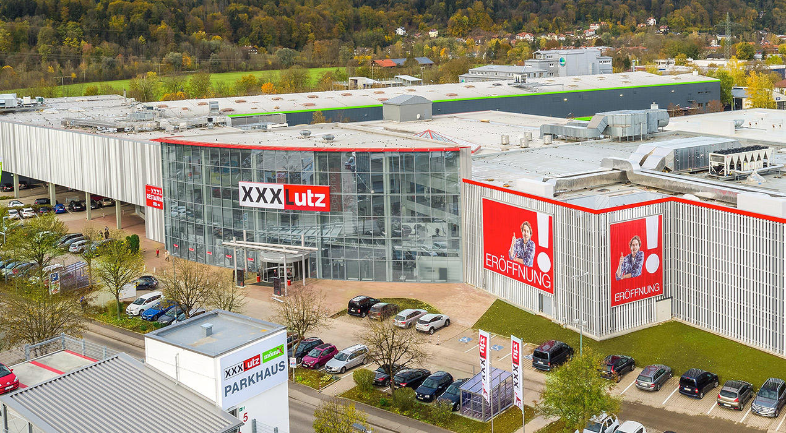
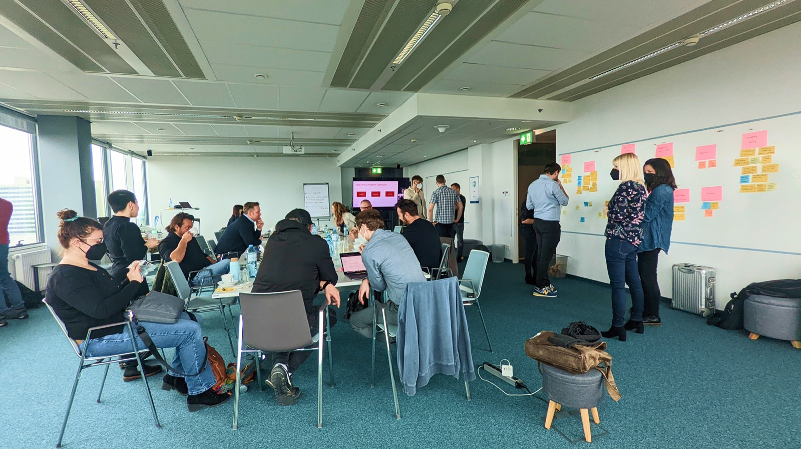
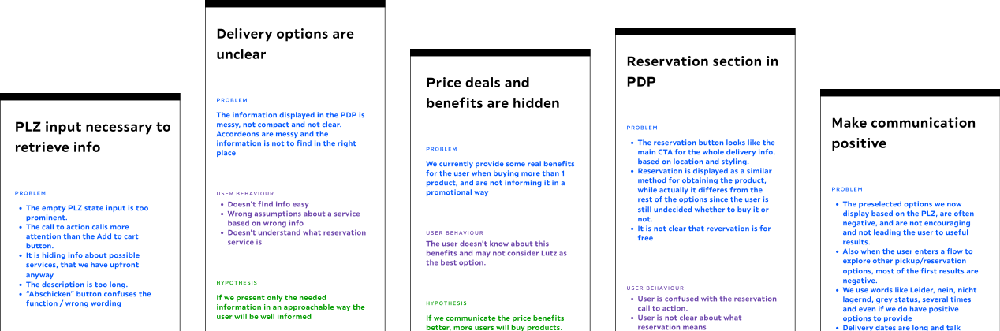

Service Design en 16 mercados
En XXXLutz, comprar un mueble online disparaba las mismas dudas en 16 mercados: ¿cuándo lo tengo en casa?, ¿lo puedo retirar?, ¿cuánto cuesta el envío? Esas preguntas sin resolver generaban llamados a soporte, usuarios confundidos y empleados de tienda frustrados.
Fui lead designer del proyecto en el equipo Assess durante 6 meses, trabajando con producto e ingeniería en los 16 mercados de XXXLutz.
Mapeé el servicio de punta a punta: entrega, reserva, Click & Collect y soporte.
Rediseñé cómo se comunica la disponibilidad y la información de envío en la página de producto.
Organicé y lideré un Design Sprint con producto e ingeniería para alinear a todo el equipo.

La información estaba redactada desde la perspectiva del sistema, no la del usuario: técnicamente correcta, pero poco útil para decidir. Comunicábamos en negativo, pedíamos el código postal antes de aportar valor, y la info de entrega quedaba lejos del producto.

"Solo online"
Disponible para envío a domicilio
Badge de estado
Reservá sin costo
Pedir código postal primero
Desde €3,50 · por producto
Cada equipo usaba términos distintos para lo mismo, generando inconsistencias entre mercados. Armé un glosario compartido y, con él, construimos un asistente de traducción y UX writing con IA que mantiene la consistencia en los 15 mercados.
En vez de preguntarnos cómo explicar el sistema, empezamos a preguntarnos qué decisión estaba tratando de tomar el usuario. Esa idea reordenó reservas, entregas, promociones y disponibilidad en toda la experiencia.
Ayudar a la gente a comprar muebles sin necesitar un doctorado en logística de muebles.
Muestra final de UI — disponibilidad, entrega, promociones y reserva.
La solución se desplegó en todos los mercados de XXXLutz. Los stakeholders más escépticos terminaron siendo quienes más la impulsaron, y un servicio que se sentía fragmentado empezó a comportarse como una experiencia coherente.
Desplegado en todos los mercados de ecommerce de XXXLutz en la UE.
Alcanzó para destapar años de excepciones que nadie había mapeado antes.
Un problema de wording terminó siendo un rediseño completo del servicio.